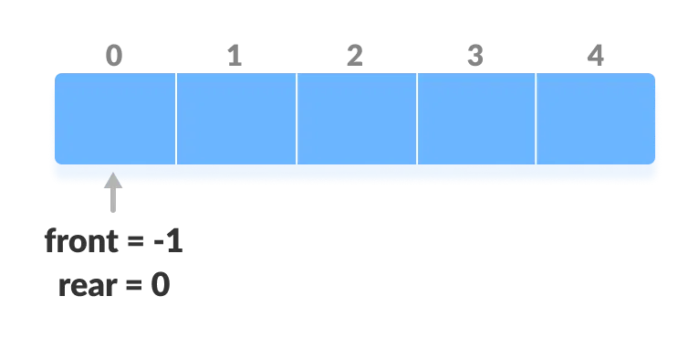
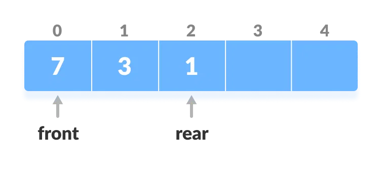
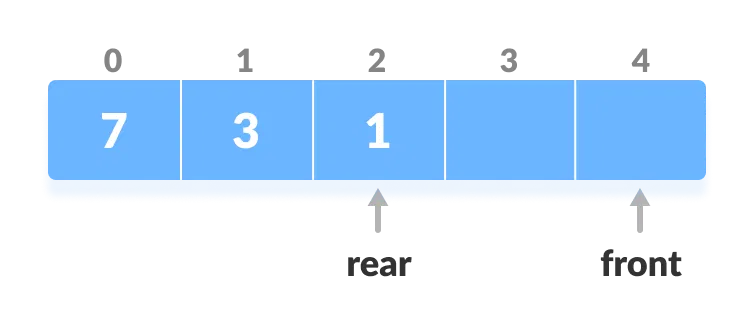
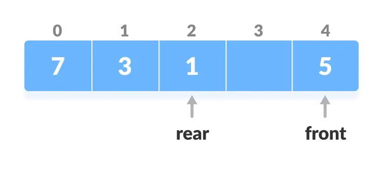
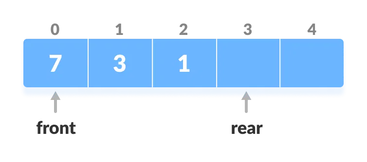
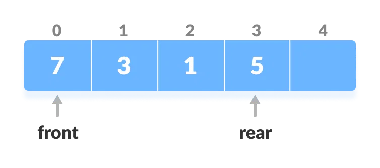
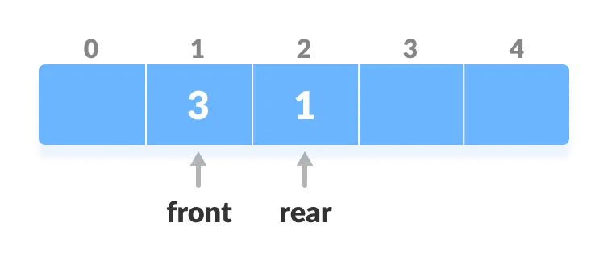

Dequeue Data Structure
- Deque or Double Ended Queue is a type of queue in which insertion and removal of elements can either be performed from the front or the rear. Thus, it does not follow FIFO rule (First In First Out).
- Input Restricted Deque
- Output Restricted Deque
Representation of Deque
Types Of Deque
In this deque, input is restricted at a single end but allows deletion at both the ends.
In this deque, output is restricted at a single end but allows insertion at both the ends.
Operations On Dequeue
Below is the circular array implementation of deque. In a circular array, if the array is full, we start from the beginning.
But in a linear array implementation, if the array is full, no more elements can be inserted. In each of the operations below, if the array is full, "overflow message" is thrown.
Before performing the following operations, these steps are followed.
- Take an array (deque) of size "n".
- Set two pointers " front = -1" and "rear = 0."

Initialize an array and pointers for deque
- Insert at the Front
- Check if the deque is full.
- If the deque is full (i.e. (front == 0 && rear == n - 1) || (front == rear + 1)), insertion operation cannot be performed ( overflow condition ).
- If the deque is empty, reinitialize " front = 0 ". And, add the new key into " array[front] ".
- If " front = 0 ", reinitialize " front = n-1 " (last index).
- Else, decrease " front " by 1.
- Add the new key 5 into " array[front] "
- Insert at the Rear
- Check if the deque is full.
- If the deque is full, insertion operation cannot be performed (overflow condition).
- If the deque is empty, reinitialize " rear = 0 ". And, add the new key into " array[rear]. "
- If " rear = n - 1 ", reinitialize " real = 0 " (first index).
- Else, increase " rear " by 1.
- Add the new key 5 into " array[rear] ".
- Delete from the Front
- Check if the deque is empty.
- If the deque is empty (i.e. front = -1), deletion cannot be performed ( underflow condition ).
- If the deque has only one element (i.e. front = rear), set " front = -1 " and " rear = -1 ".
- Else if " front " is at the last index (i.e. front = n - 1), set " front = 0 ".
- Else, " front = front + 1 ".
- Delete from the Rear
- Check if the deque is empty.
- If the deque is empty (i.e. front = -1), deletion cannot be performed ( underflow condition ).
- If the deque has only one element (i.e. front = rear), set " front = -1 " and " rear = -1 ", else follow the steps below.
- If " rear " is at the first index (i.e. rear = 0), reinitialize " rear = n - 1 ".
- Else, " rear = rear - 1 "
- Check Empty
- Check Full
This operation adds an element at the front.

Check the position of front

Shift front to the end

Insert the element at Front
This operation adds an element to the rear.

Check if deque is full

Increase the rear

Insert the element at rear
The operation deletes an element from the " front " .

Check if deque is empty

Increase the front
This operation deletes an element from the " rear ".
Check if deque is empty
This operation checks if the deque is empty. If " front = -1 ", the deque is empty.
This operation checks if the deque is full. If " front = 0 " and " rear = n - 1 " OR " front = rear + 1 ", the deque is full.
Dequeue Implementations in Python, Java and C/C++
# Dequeue implementation in Python
class Deque:
def __init__(self):
self.items = []
def addFront(self, item):
self.items.insert(0, item)
def addRear(self, item):
self.items.append(item)
def removeFront(self):
if len(self.items) > 0:
return self.items.pop(0)
else:
return None
def removeRear(self):
if len(self.items) > 0:
return self.items.pop()
else:
return None
def size(self):
return len(self.items)
def isEmpty(self):
return len(self.items) == 0
def peekFront(self):
if len(self.items) > 0:
return self.items[0]
else:
return None
def peekRear(self):
if len(self.items) > 0:
return self.items[-1]
else:
return None
deque = Deque()
deque.addFront(1)
deque.addRear(2)
print(deque.removeFront()) # Output: 1
print(deque.removeRear()) # Output: 2
// Dequeue implementation in Java
import "java.util.LinkedList";
public class Deque {
private LinkedList<Integer> items;
public Deque() {
items = new LinkedList<>();
}
public void addFront(int item) {
items.addFirst(item);
}
public void addRear(int item) {
items.addLast(item);
}
public int removeFront() {
if (!items.isEmpty()) {
return items.removeFirst();
}
return -1; // Error code
}
public int removeRear() {
if (!items.isEmpty()) {
return items.removeLast();
}
return -1; // Error code
}
public int size() {
return items.size();
}
public boolean isEmpty() {
return items.isEmpty();
}
public int peekFront() {
if (!items.isEmpty()) {
return items.getFirst();
}
return -1; // Error code
}
public int peekRear() {
if (!items.isEmpty()) {
return items.getLast();
}
return -1; // Error code
}
}
// Test the Deque class
Deque deque = new Deque();
deque.addFront(1);
deque.addRear(2);
System.out.println(deque.removeFront()); // Output: 1
System.out.println(deque.removeRear()); // Output: 2
// Dequeue implementation in C
#include <stdio.h>
#include <stdlib.h>
struct Deque {
int front, rear, size;
int *array;
};
struct Deque* createDeque(int size) {
struct Deque* deque = malloc(sizeof(struct Deque));
deque->size = size;
deque->front = -1;
deque->rear = -1;
deque->array = malloc(size * sizeof(int));
return deque;
}
int isEmpty(struct Deque* deque) {
return deque->front == -1;
}
int isFull(struct Deque* deque) {
return deque->rear == deque->size - 1;
}
void addFront(struct Deque* deque, int item) {
if (isFull(deque)) {
printf("Deque is full");
return;
}
if (deque->front == -1) {
deque->front = 0;
deque->rear = 0;
} else {
deque->front--;
}
deque->array[deque->front] = item;
}
void addRear(struct Deque* deque, int item) {
if (isFull(deque)) {
printf("Deque is full");
return;
}
if (deque->rear == -1) {
deque->front = 0;
deque->rear = 0;
} else {
deque->rear++;
}
deque->array[deque->rear] = item;
}
int removeFront(struct Deque* deque) {
if (isEmpty(deque)) {
printf("Deque is empty");
return -1;
}
int item = deque->array[deque->front];
if (deque->front == deque->rear) {
deque->front = -1;
deque->rear = -1;
} else {
deque->front++;
}
return item;
}
int removeRear(struct Deque* deque) {
if (isEmpty(deque)) {
printf("Deque is empty");
return -1;
}
int item = deque->array[deque->rear];
if (deque->front == deque->rear) {
deque->front = -1;
deque->rear = -1;
} else {
deque->rear--;
}
return item;
}
// Dequeue implementation in C++
#include <iostream>
#include <deque>
using namespace std;
class Deque {
private:
deque<int> items;
public:
void addFront(int item) {
items.push_front(item);
}
void addRear(int item) {
items.push_back(item);
}
int removeFront() {
if (!items.empty()) {
int frontItem = items.front();
items.pop_front();
return frontItem;
}
return -1; // Error code
}
int removeRear() {
if (!items.empty()) {
int rearItem = items.back();
items.pop_back();
return rearItem;
}
return -1; // Error code
}
int size() {
return items.size();
}
bool isEmpty() {
return items.empty();
}
int peekFront() {
if (!items.empty()) {
return items.front();
}
return -1; // Error code
}
int peekRear() {
if (!items.empty()) {
return items.back();
}
return -1; // Error code
}
};
int main() {
Deque deque;
deque.addFront(1);
deque.addRear(2);
cout << deque.removeFront() << " ";// Output: 1
cout << deque.removeRear() << " ";// Output: 2
return 0;
}
Time Complexities
- The time complexity of all the above operations is constant i.e. "O(1)".
Applications of Deque Data Structure
- In undo operations on software.
- To store history in browsers.